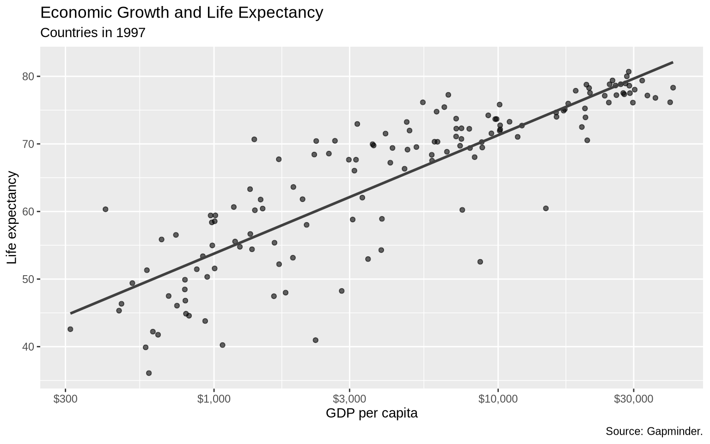
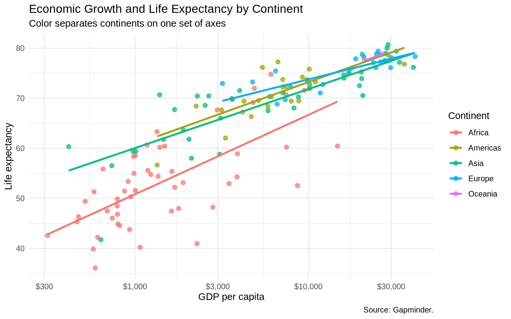
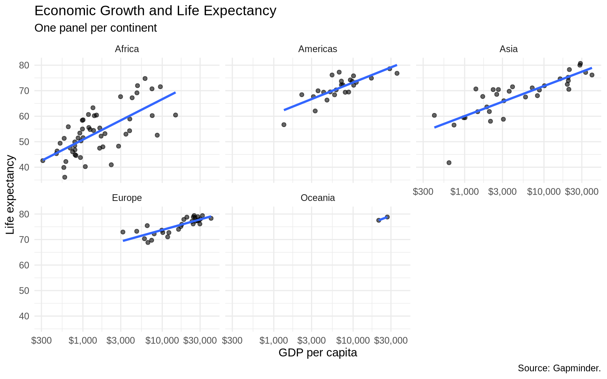
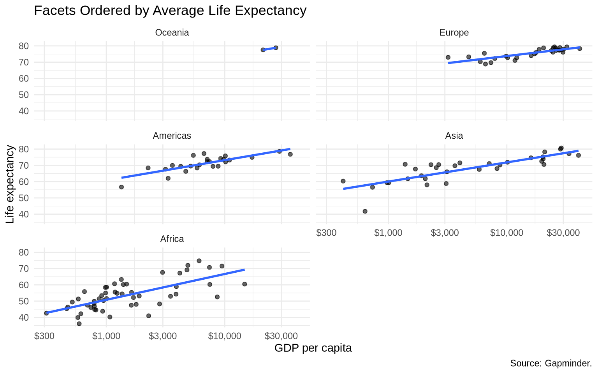
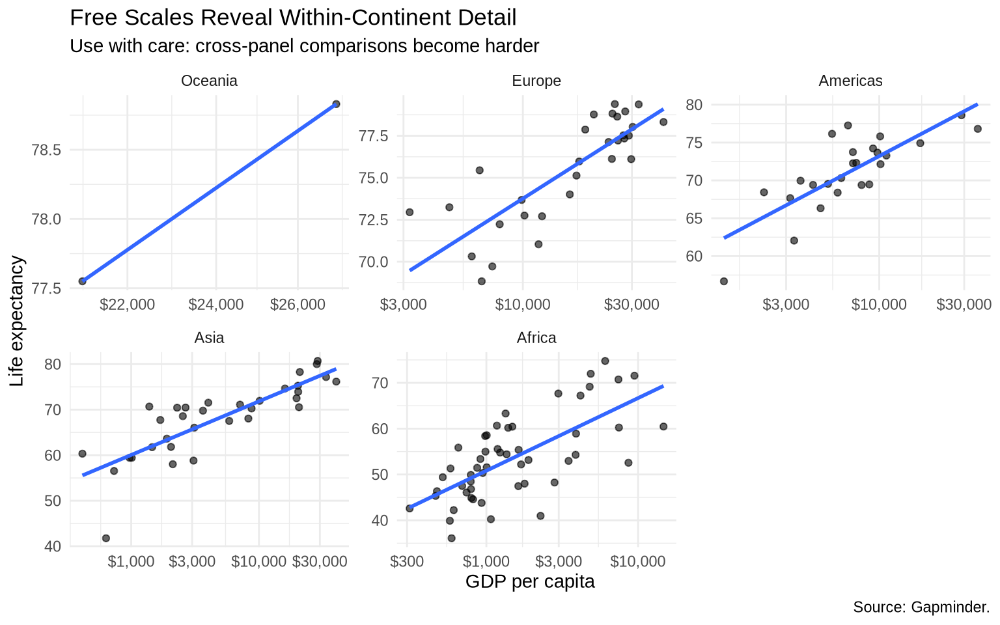
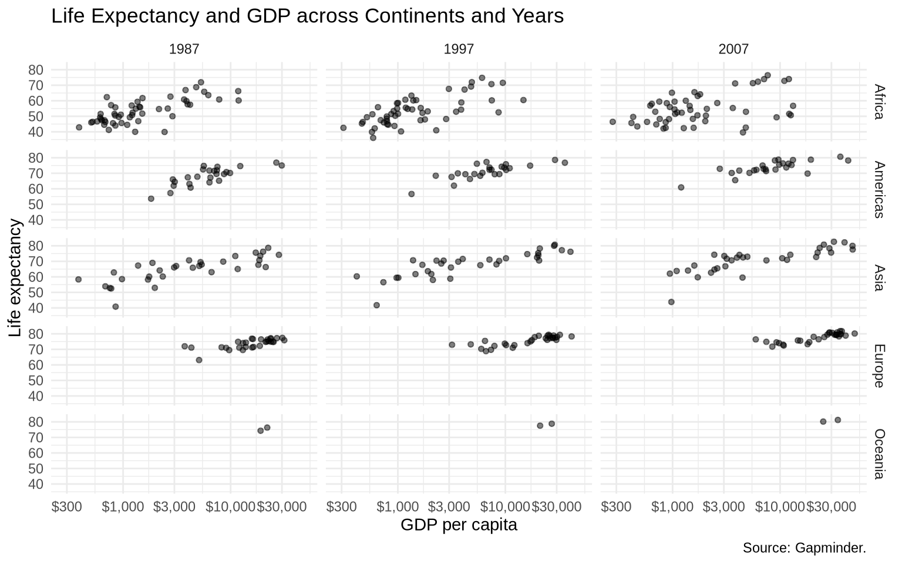
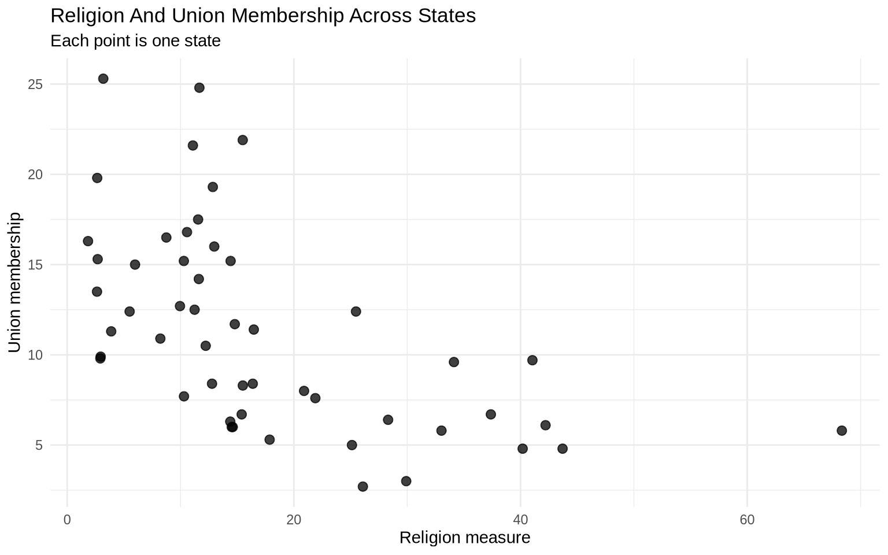
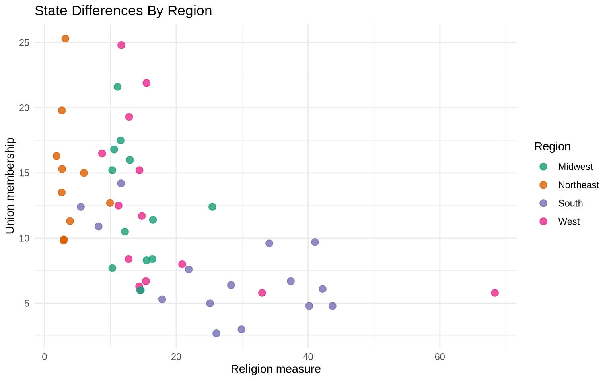
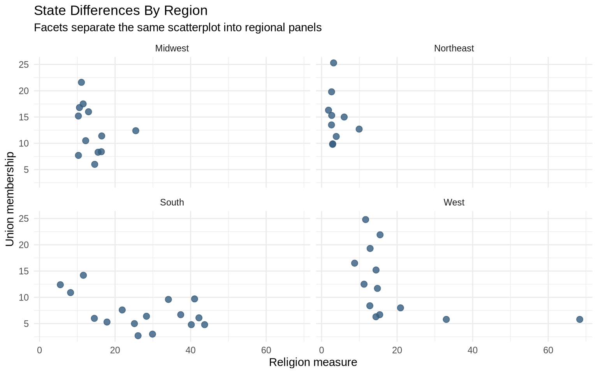

Many plots become more useful when we separate the data into meaningful groups. The relationship between two variables might look simple overall, but the pattern can differ across continents, years, regions, parties, income groups, or other subgroups.
There are two common ggplot2 strategies:
Map a grouping variable to an aesthetic such as color, shape, fill, or linetype.
Use facets to create small multiples: repeated panels that show the same plot for different subsets of the data.
Both approaches are useful. The question is not which one is always better. The question is which one makes the comparison easier.
5.2 Start with one plot
We will use Gapminder data to compare GDP per capita and life expectancy. First, filter to one year so that each point is one country.
gap_1997 <- gapminder |>filter(year ==1997)base_gap <-ggplot(data = gap_1997,mapping =aes(x = gdpPercap, y = lifeExp)) +geom_point(alpha =0.6) +geom_smooth(method ="lm", formula = y ~ x, se =FALSE, color ="gray25") +scale_x_log10(labels =dollar_format(accuracy =1)) +scale_y_continuous(breaks =seq(20, 90, by =10)) +labs(title ="Economic Growth and Life Expectancy",subtitle ="Countries in 1997",x ="GDP per capita",y ="Life expectancy",caption ="Source: Gapminder." )base_gap

The log scale on the x-axis helps because GDP per capita is very skewed. Without it, the lower-income countries would be compressed into a small part of the plot.
5.3 Color as separation
One way to separate groups is to map a variable to color inside aes().
gap_color <-ggplot(data = gap_1997,mapping =aes(x = gdpPercap, y = lifeExp, color = continent)) +geom_point(alpha =0.75, size =2) +geom_smooth(method ="lm", formula = y ~ x, se =FALSE) +scale_x_log10(labels =dollar_format(accuracy =1)) +labs(title ="Economic Growth and Life Expectancy by Continent",subtitle ="Color separates continents on one set of axes",x ="GDP per capita",y ="Life expectancy",color ="Continent",caption ="Source: Gapminder." ) +theme_minimal()gap_color

Because continent is mapped inside aes(), ggplot2 treats color as part of the data mapping and creates a legend. If we wrote geom_point(color = "steelblue"), every point would be steel blue and no legend would be needed.
5.4 Facets as small multiples
Faceting creates one panel for each level of a variable. This gives each group its own space.
ggplot(data = gap_1997, mapping =aes(x = gdpPercap, y = lifeExp)) +geom_point(alpha =0.6) +geom_smooth(method ="lm", formula = y ~ x, se =FALSE) +scale_x_log10(labels =dollar_format(accuracy =1)) +facet_wrap(~ continent) +labs(title ="Economic Growth and Life Expectancy",subtitle ="One panel per continent",x ="GDP per capita",y ="Life expectancy",caption ="Source: Gapminder." ) +theme_minimal()

The default shared scales make comparisons across panels fair. Africa and Europe are plotted on the same x and y ranges, so differences in location and spread are visible.
5.5 Reordering facets
Facet order is not always meaningful by default. We can reorder the continent variable by average life expectancy.
gap_1997_ordered <- gap_1997 |>mutate(continent =fct_reorder(.f = continent,.x = lifeExp,.fun = mean,.desc =TRUE ) )ggplot(data = gap_1997_ordered, mapping =aes(x = gdpPercap, y = lifeExp)) +geom_point(alpha =0.6) +geom_smooth(method ="lm", formula = y ~ x, se =FALSE) +scale_x_log10(labels =dollar_format(accuracy =1)) +facet_wrap(~ continent, ncol =2) +labs(title ="Facets Ordered by Average Life Expectancy",x ="GDP per capita",y ="Life expectancy",caption ="Source: Gapminder." ) +theme_minimal()

fct_reorder() changes the order of the factor levels. That order is then used by facet_wrap().
5.6 Free scales
Sometimes fixed scales make within-group patterns hard to see. Free scales let each panel use its own axis range.
ggplot(data = gap_1997_ordered, mapping =aes(x = gdpPercap, y = lifeExp)) +geom_point(alpha =0.6) +geom_smooth(method ="lm", formula = y ~ x, se =FALSE) +scale_x_log10(labels =dollar_format(accuracy =1)) +facet_wrap(~ continent, scales ="free") +labs(title ="Free Scales Reveal Within-Continent Detail",subtitle ="Use with care: cross-panel comparisons become harder",x ="GDP per capita",y ="Life expectancy",caption ="Source: Gapminder." ) +theme_minimal()

Free scales are not wrong, but they answer a different question. Fixed scales emphasize comparison across groups. Free scales emphasize detail within each group.
5.7 Direct labels
Legends require the reader to look back and forth between the data and the key. Direct labels can reduce that work.
Direct labels work best when there are not too many groups and there is enough space for the labels.
5.8facet_grid()
facet_wrap() is usually the easiest choice for one grouping variable. facet_grid() is useful when the panel layout has rows and columns with substantive meaning.
gap_recent <- gapminder |>filter(year %in%c(1987, 1997, 2007))ggplot(data = gap_recent, mapping =aes(x = gdpPercap, y = lifeExp)) +geom_point(alpha =0.5, size =1.3) +scale_x_log10(labels =dollar_format(accuracy =1)) +facet_grid(continent ~ year) +labs(title ="Life Expectancy and GDP across Continents and Years",x ="GDP per capita",y ="Life expectancy",caption ="Source: Gapminder." ) +theme_minimal()

Read facet_grid(continent ~ year) as “continent defines the rows, year defines the columns.”
5.9 Patchwork
Facets repeat the same plot structure across groups. Sometimes you want to combine different plots into one figure. The patchwork package lets you assemble separate ggplot objects.
The two variables in the next plot are percentages. The point is not to make a causal claim. The point is to practice separating and comparing state-level observations.
ggplot( state_policy,aes(x = religion_pct, y = union_pct)) +geom_point(size =2.5, alpha =0.75) +labs(title ="Religion And Union Membership Across States",subtitle ="Each point is one state",x ="Religion measure",y ="Union membership" ) +theme_minimal()

Color can separate regions without creating multiple panels. This is useful when the plot is still readable with all observations in one place.
ggplot( state_policy,aes(x = religion_pct, y = union_pct, color = region)) +geom_point(size =2.8, alpha =0.8) +scale_color_brewer(palette ="Dark2") +labs(title ="State Differences By Region",x ="Religion measure",y ="Union membership",color ="Region" ) +theme_minimal()

Facets split the same data into small multiples. This makes regional comparisons clearer when the color version starts to feel crowded.
ggplot( state_policy,aes(x = religion_pct, y = union_pct)) +geom_point(color ="#355c7d", size =2.5, alpha =0.8) +facet_wrap(~ region) +labs(title ="State Differences By Region",subtitle ="Facets separate the same scatterplot into regional panels",x ="Religion measure",y ="Union membership" ) +theme_minimal()

Direct labels are useful when a few cases matter. Labeling every state would crowd the figure, so the next example labels only selected states.